Unit 2 Progress Tracker
Progress Tracking
Progress Tracking
Check One
Evidence — assessment name and score
Progress Tracking
Check One
Evidence — assessment name and score
Progress Tracking
Check One
Evidence — assessment name and score
Progress Tracking
Check One
Evidence — assessment name and score
Unit 2 Practice by Depth of Knowledge
A graph is shown. Use symmetry to classify the function as even, odd, or neither.
- What type of symmetry do you see?
- What should be true about \(f(-x)\)?
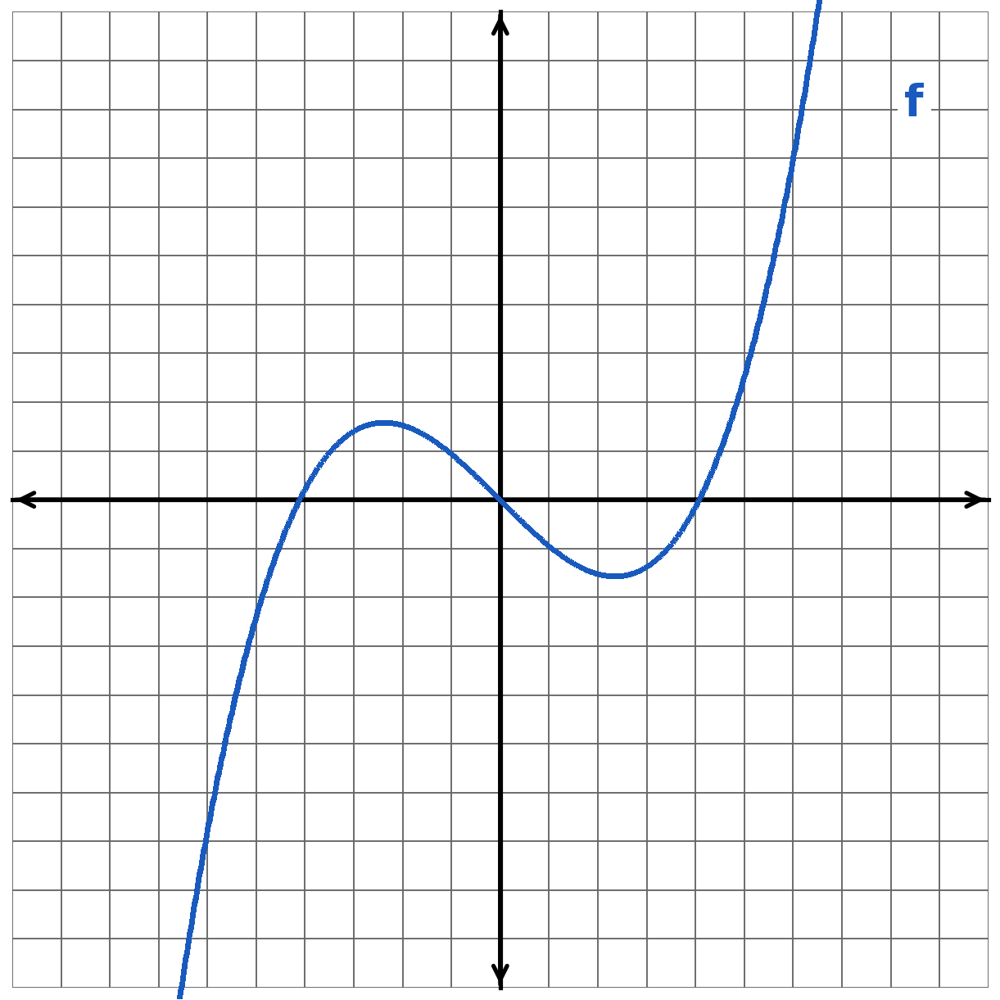
Use the table to determine whether the function appears even, odd, or neither.
| \(x\) | \(-2\) | \(-1\) | \(1\) | \(2\) |
|---|---|---|---|---|
| \(f(x)\) | \(4\) | \(1\) | \(1\) | \(4\) |
Justify using the table.
The graphs of \(f\) and \(g\) are shown.
- Estimate \(f(2)\) and \(g(2)\).
- Estimate \((f+g)(2)\).
- Estimate \((f-g)(2)\).
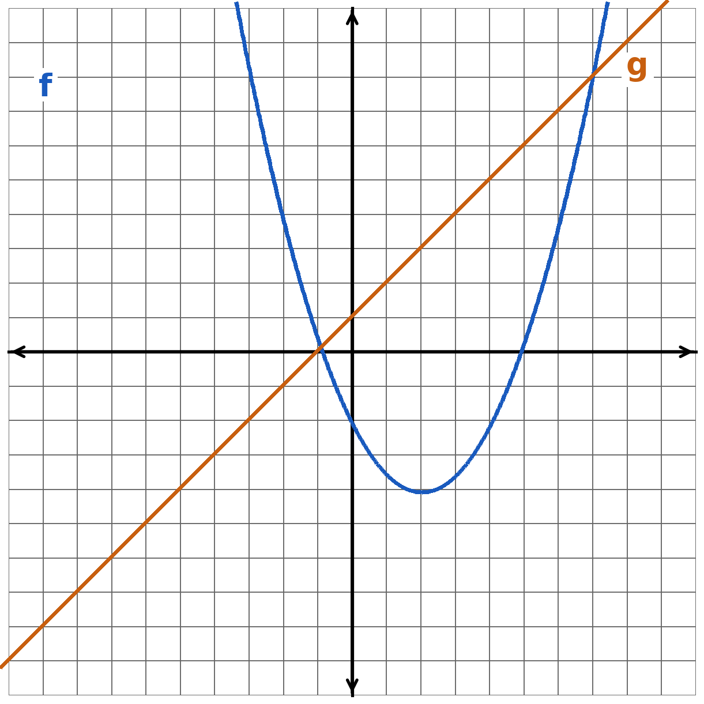
Use the table to evaluate each expression.
| \(x\) | \(-2\) | \(0\) | \(3\) |
|---|---|---|---|
| \(f(x)\) | \(5\) | \(1\) | \(-4\) |
| \(g(x)\) | \(-2\) | \(6\) | \(3\) |
- \((f+g)(0)\)
- \((fg)(-2)\)
- \(\left(\frac{f}{g}\right)(3)\)
Use the table.
| \(x\) | \(-2\) | \(-1\) | \(0\) | \(1\) | \(2\) |
|---|---|---|---|---|---|
| \(f(x)\) | \(1\) | \(3\) | \(2\) | \(-1\) | \(0\) |
| \(g(x)\) | \(2\) | \(0\) | \(-1\) | \(3\) | \(1\) |
- \(f(g(0))\)
- \(g(f(2))\)
- \(f(f(1))\)
Decide whether each expression represents function composition or function arithmetic.
- \(f(g(x))\)
- \(f(x)+g(x)\)
- \((f\circ g)(x)\)
- \(f(x)g(x)\)
Use the table to find the average rate of change from \(x=0\) to \(x=3\).
| \(x\) | \(0\) | \(1\) | \(2\) | \(3\) |
|---|---|---|---|---|
| \(f(x)\) | \(2\) | \(5\) | \(10\) | \(17\) |
Use the horizontal line test to decide whether each graph has an inverse that is a function.
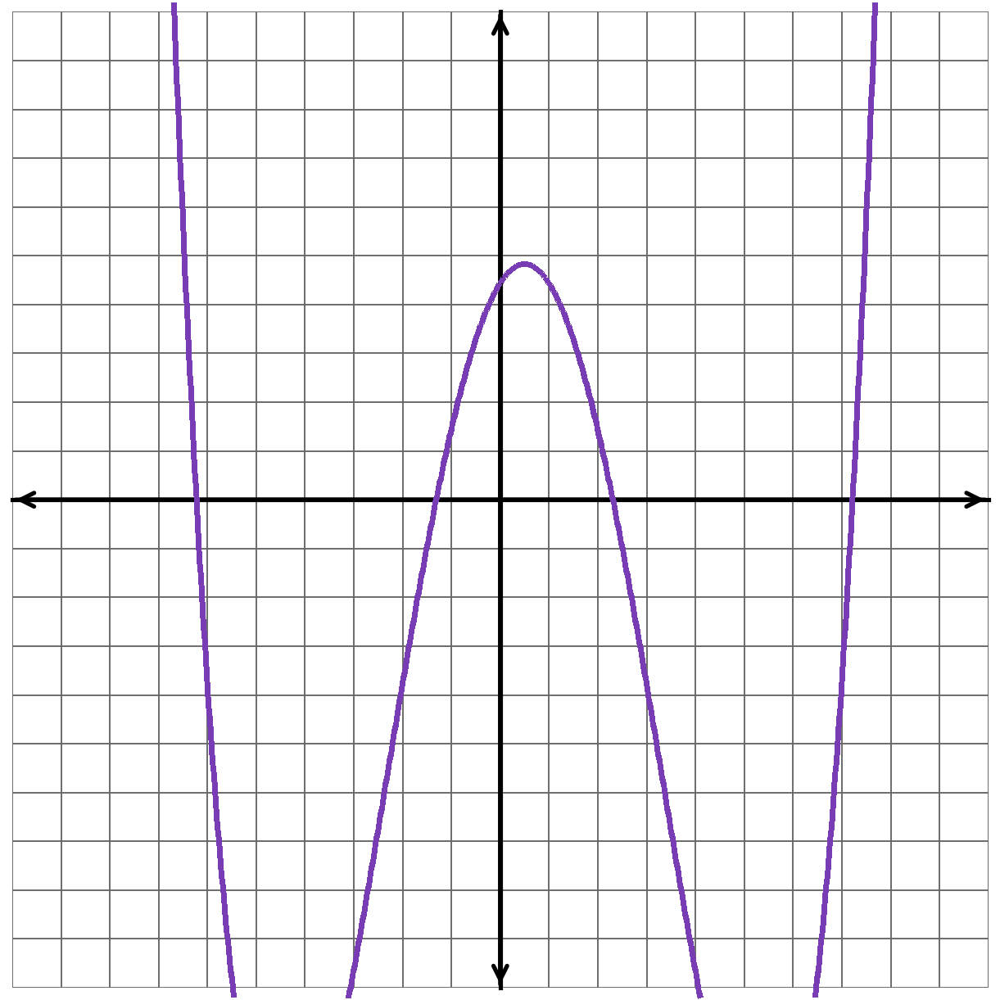
The graph of \(f\) and the graph of \(g\) are shown separately.
- Estimate \(f(1)\) and \(g(1)\), then find \((f+g)(1)\).
- Estimate \(f(4)\) and \(g(4)\), then find \((f-g)(4)\).
- Use your graph values to find \((fg)(1)\).
- Explain how you used the two graphs.

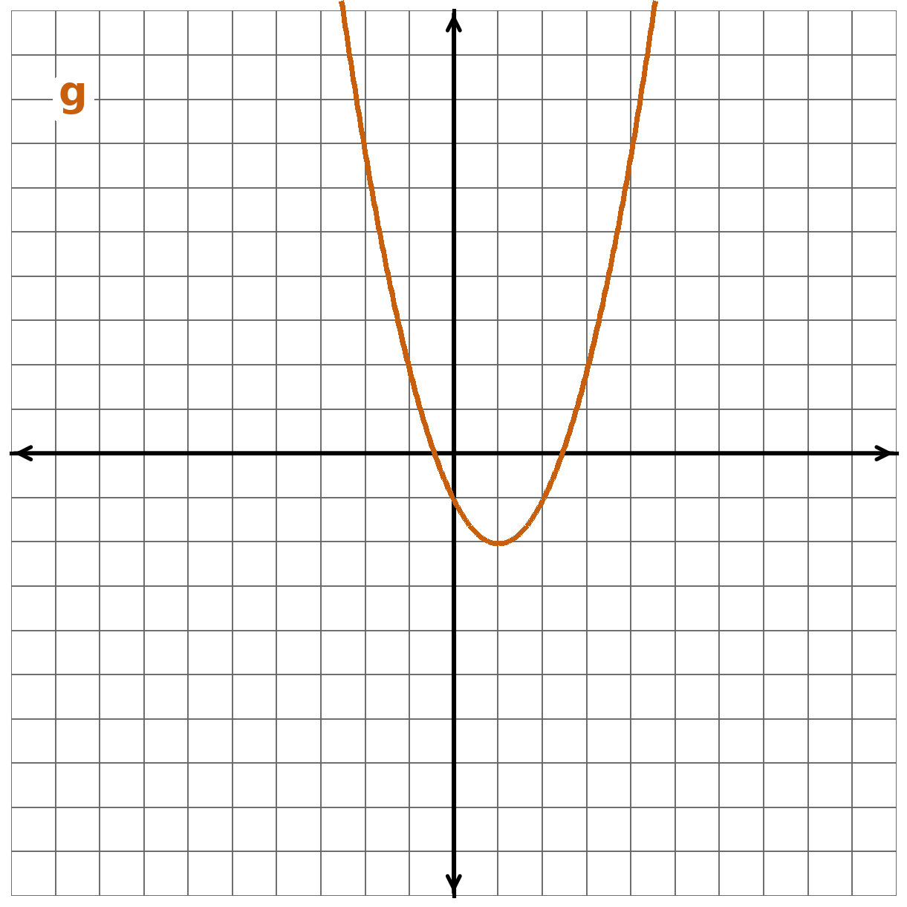
Use the graph of \(f\) and the table for \(g\).
| \(x\) | \(-2\) | \(-1\) | \(0\) | \(1\) | \(2\) |
|---|---|---|---|---|---|
| \(g(x)\) | \(1\) | \(3\) | \(-1\) | \(2\) | \(0\) |
- Find \(g(0)\).
- Use the graph of \(f\) to find \(f(g(0))\).
- Find \(g(2)\).
- Use the graph of \(f\) to find \(f(g(2))\).
- Explain how the table output becomes the graph input.
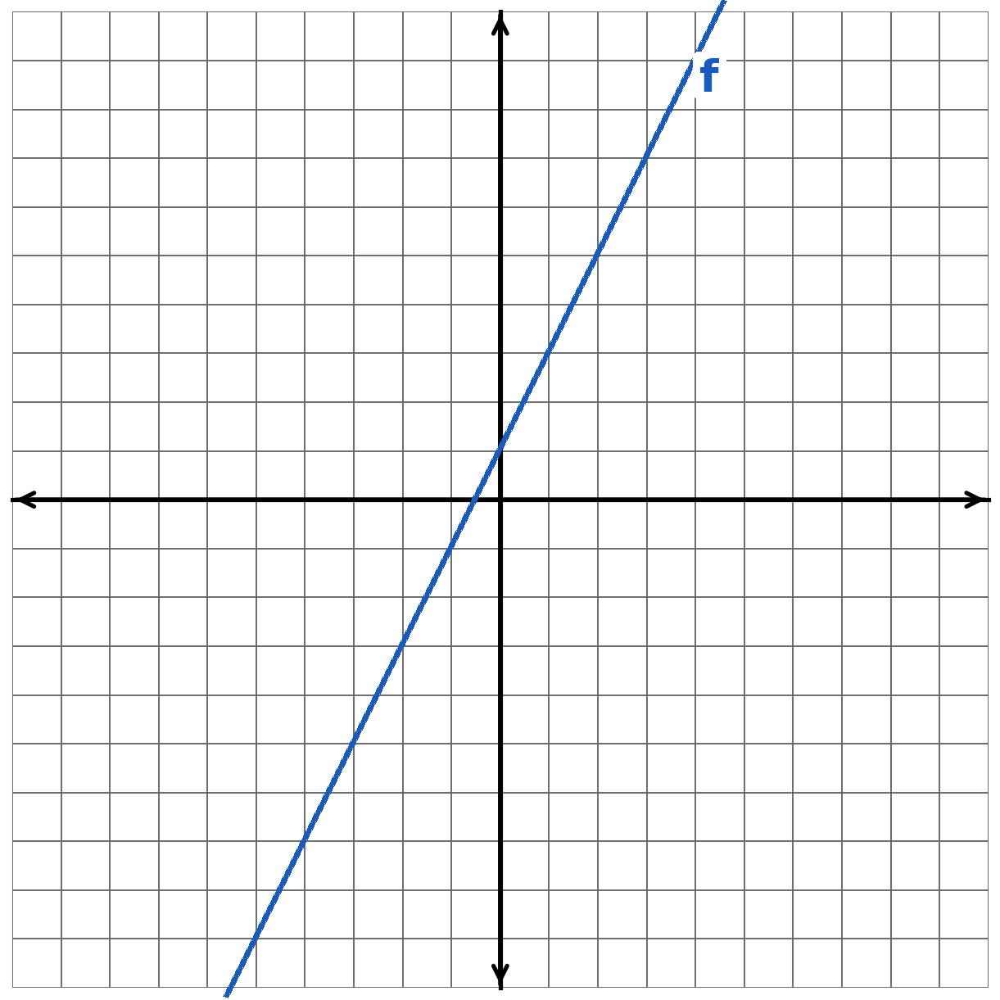
Use the equation for \(f\) and the graph of \(g\).
\(f(x)=2x-1\)
- Estimate \(g(3)\) from the graph.
- Find \(f(g(3))\).
- Estimate \(g(-1)\) from the graph.
- Find \(f(g(-1))\).
- Explain why the graph value must be found before using the equation.
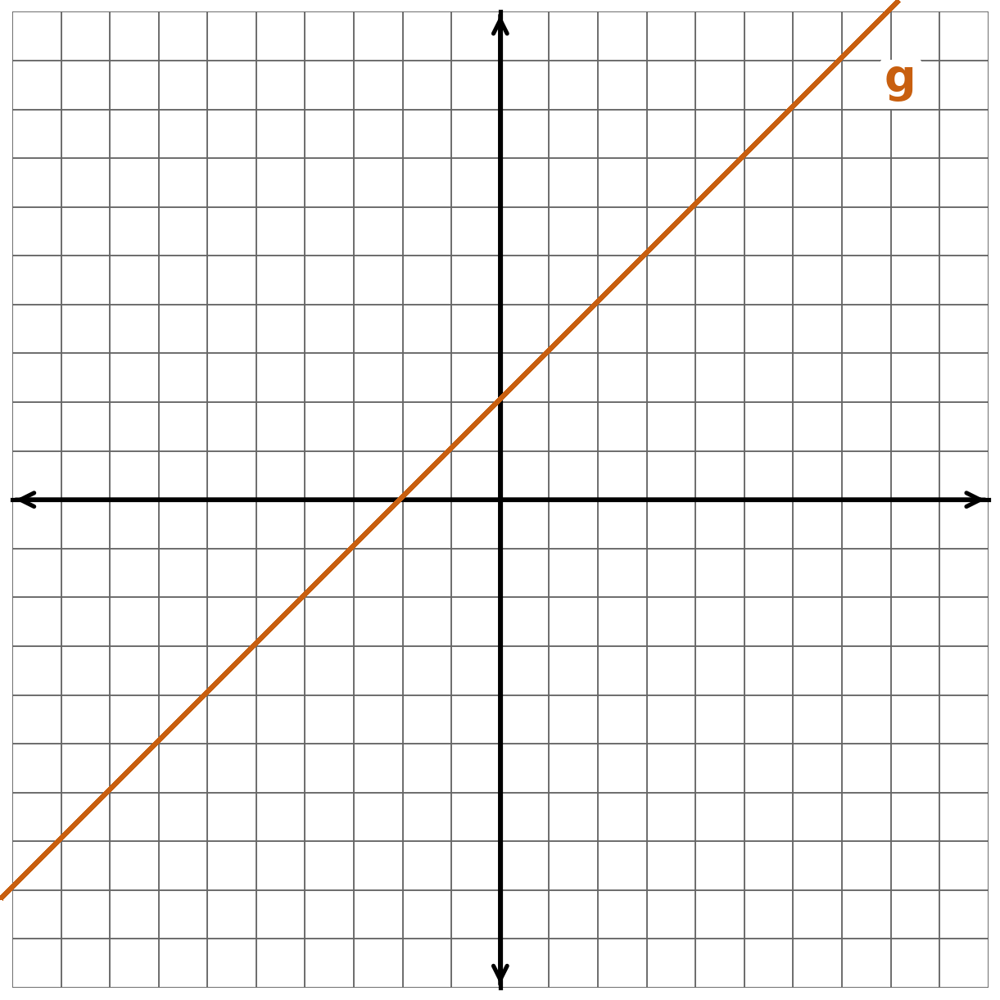
Use a graph of \(f(x)=x^2-2\) to estimate the average rate of change from \(x=1\) to \(x=3\). Explain how this matches the idea of the difference quotient.
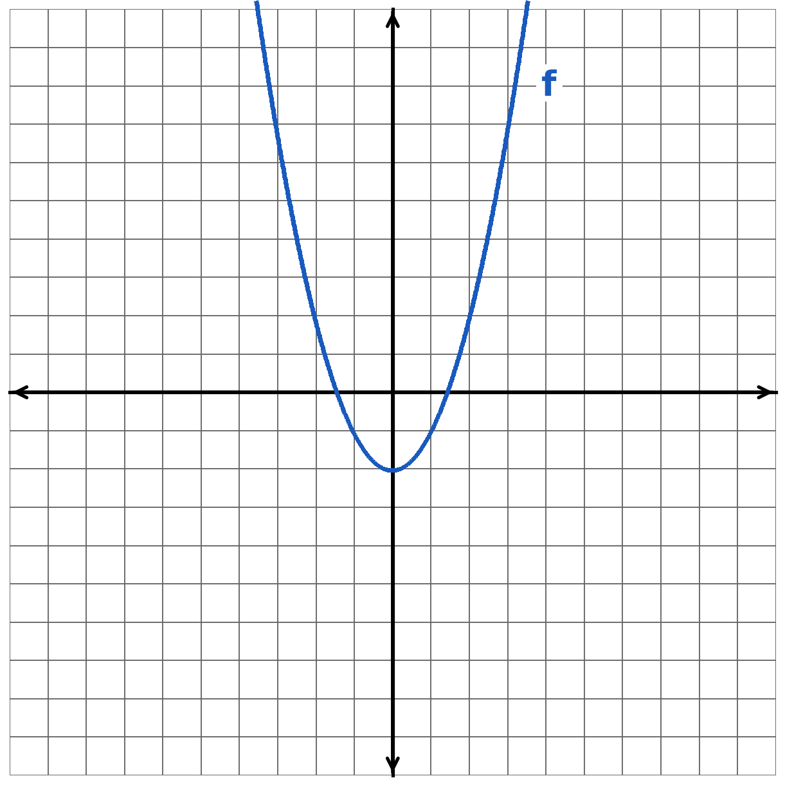
For \(f(x)=\sqrt{x}\), use a graph to estimate the average rate of change from \(x=1\) to \(x=4\). Then verify using exact function values.
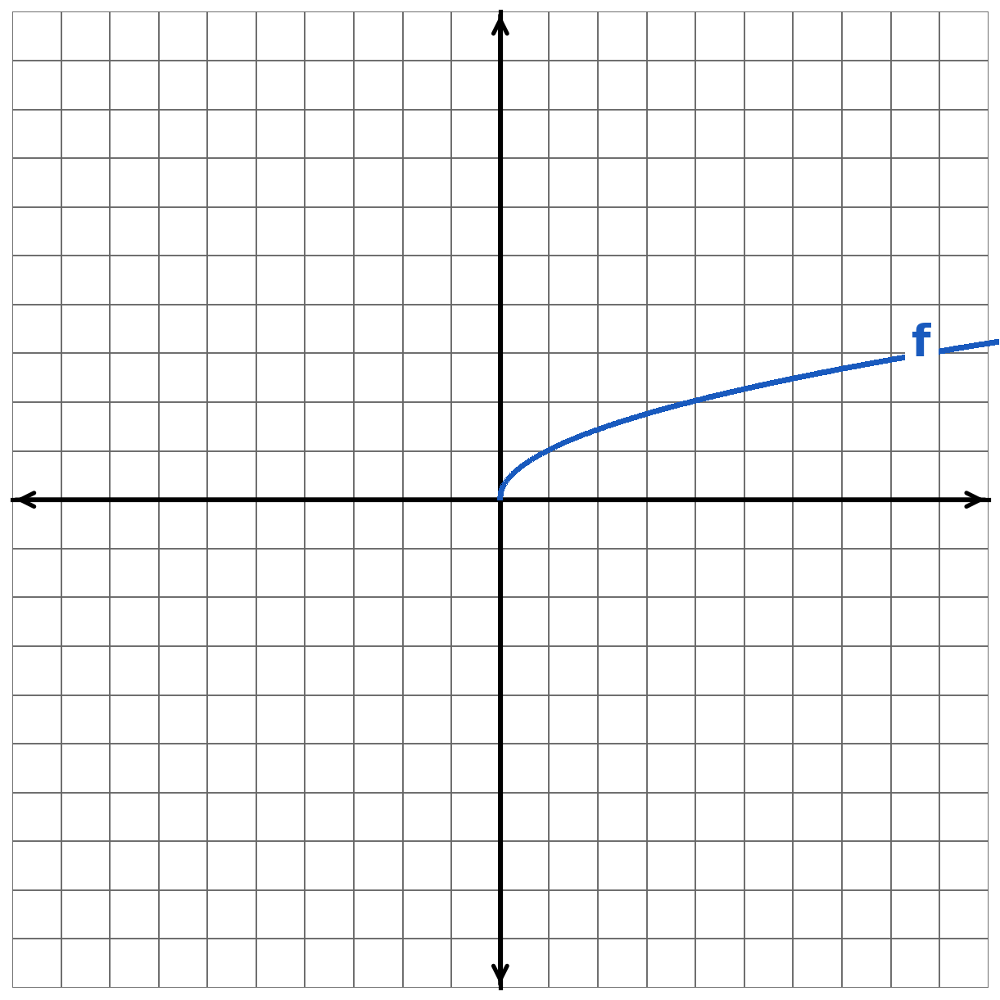
Use the graph of \(f\).
- Sketch \(f^{-1}\).
- Identify two reflected point pairs.
- State whether \(f^{-1}\) is a function.
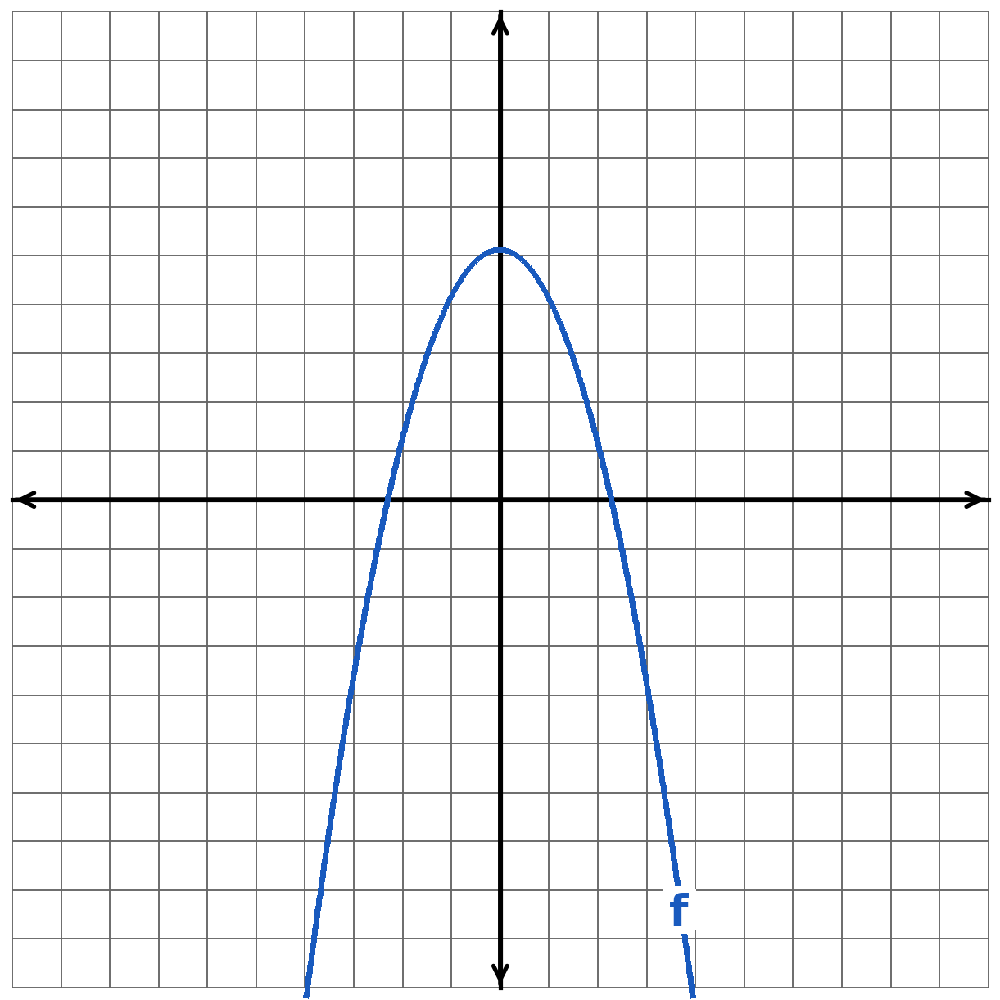
Let \(f(x)=\sqrt{x}\) and \(g(x)=x-5\).
- Find \(f(g(x))\).
- State the domain of \(f(g(x))\).
- Explain why the domain is restricted.
Verify that \(f(x)=2x-1\) and \(g(x)=\frac{x+1}{2}\) are inverses using composition.
Consider the piecewise-defined function.
\(f(x)=\begin{cases}x^2 & x\ge 0\\ -x^2 & x<0\end{cases}\)
- Classify the function as even, odd, or neither.
- Justify algebraically.
- Describe its symmetry.
Let \(f(x)=\sqrt{x+1}\) and \(g(x)=6-x\).
- Find the domain of \(f+g\).
- Find the domain of \(fg\).
- Find the domain of \(\frac{f}{g}\).
- Explain why the quotient has one additional restriction.
Use the graph of \(f\) and the graph of \(g\).
- Estimate \(g(1)\), then use that value to estimate \(f(g(1))\).
- Estimate \(f(1)\), then use that value to estimate \(g(f(1))\).
- Are the results the same?
- Explain why the order of composition matters using the graphs.
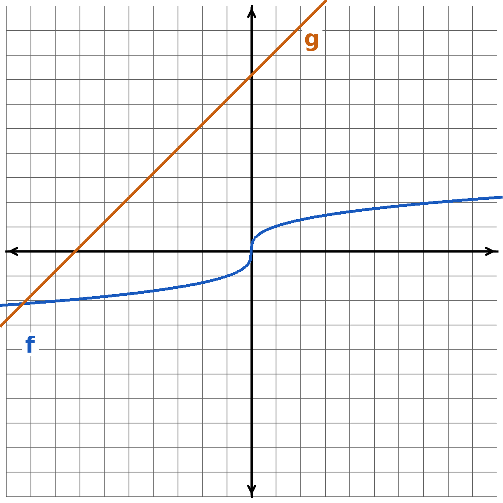
Use graph values to estimate average rate of change from \(x=-2\) to \(x=2\). Then explain why another interval with the same length may have a different average rate of change.
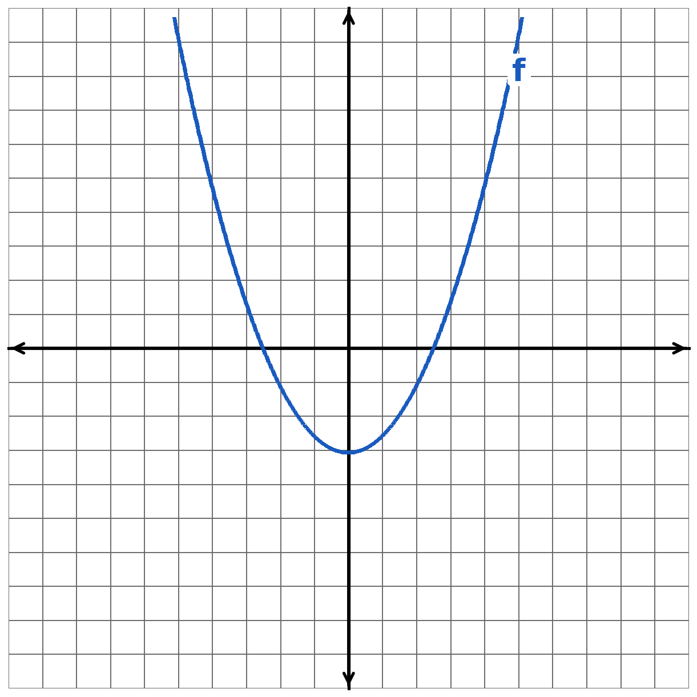
A cyclist’s distance is modeled by \(d(t)=4t^2+8t\).
- Find the average speed from \(t=1\) to \(t=4\).
- Find the average speed from \(t=4\) to \(t=7\).
- Explain why the two average speeds are different.
A graph is reflected across \(y=x\). Explain how:
- domain and range change
- \(x\)- and \(y\)-intercepts change
- points on the graph change
Compare function arithmetic and function composition.
Use examples to explain the difference between \((f+g)(x)\) and \(f(g(x))\).
Your explanation should include meaning, notation, and order.
A student finds the inverse of \(f(x)=\sqrt{x+6}\) as \(f^{-1}(x)=x^2+6\).
- Identify the error.
- Find the correct inverse.
- State the correct domain of the inverse.
A student says, “If a graph looks symmetric, then it must be even or odd.”
- Is this always true?
- Use the figure or another example as a counterexample.
- Explain the difference between visual symmetry and the algebraic definitions of even and odd functions.
Create a function that is symmetric about the \(y\)-axis, has a maximum at \((0,5)\), and is not quadratic.
Write the equation, sketch or describe the graph, and justify why it satisfies all conditions.

A school store sells shirts and hats. Let \(S(x)\) be shirt revenue and \(H(x)\) be hat revenue after \(x\) days.
- Create reasonable functions \(S(x)\) and \(H(x)\).
- Write and interpret \((S+H)(x)\).
- Write and interpret \((S-H)(x)\).
- Explain whether \(\frac{S(x)}{H(x)}\) has a meaningful interpretation.
Use a graph to explain how secant slopes approach a tangent slope as \(h\) gets closer to 0.
- Describe what changes in the picture.
- Explain what stays fixed.
- Connect your explanation to the difference quotient.

Design a graph that has an inverse relation but not an inverse function.
- Sketch or describe the graph.
- Explain why the inverse relation exists.
- Explain why the inverse is not a function.

Create two functions \(f\) and \(g\) so that:
- \((f+g)(x)\) is linear.
- \((fg)(x)\) is quadratic.
- \(\frac{f}{g}\) has an excluded value.
Explain why your choices satisfy all three conditions.
Design a real-world situation involving two steps where the order matters.
- Define both functions.
- Write both compositions.
- Explain why one order matches the situation and the other does not.
Design two functions that are inverses of each other.
- Write both functions.
- Verify by composition.
- Explain how the graphs would relate.